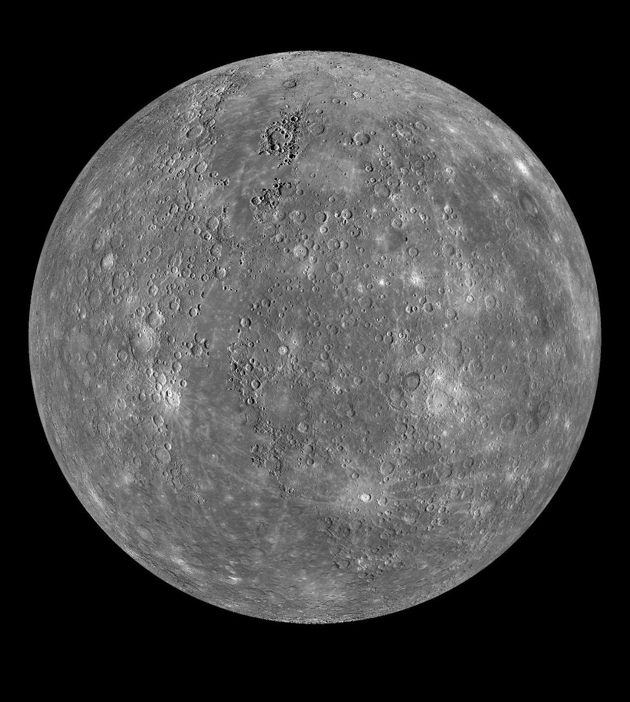
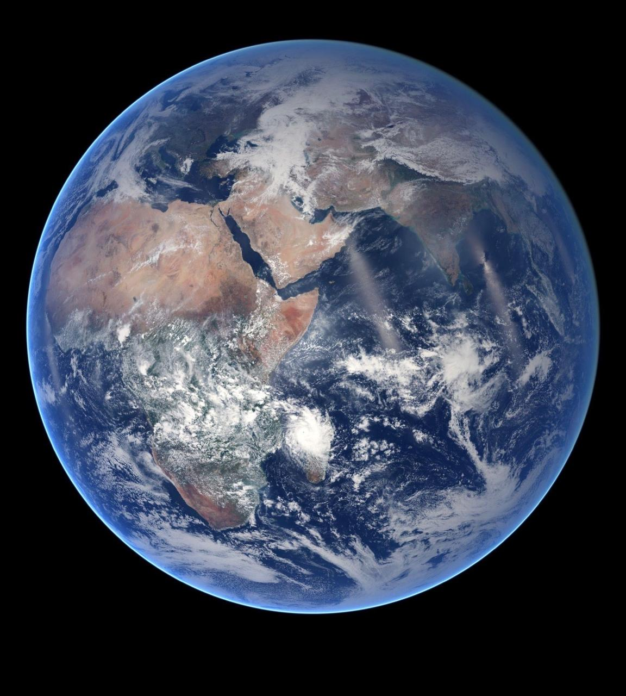
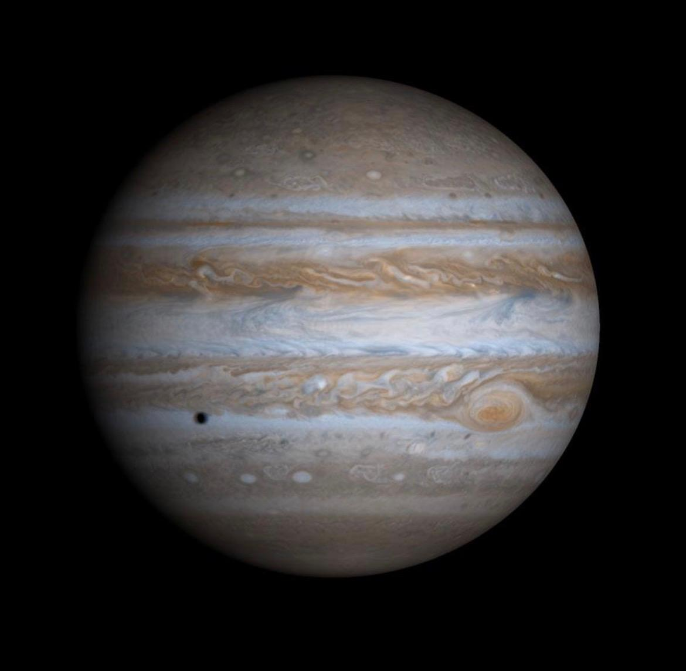

Mercury is the smallest planet in the Solar System and the closest planet
to the Sun. It has a rocky surface covered with craters and experiences
very large temperature differences between day and night.

Earth is the third planet from the Sun and the only known planet to support
life. It has large amounts of liquid water and an atmosphere that provides
the conditions necessary for a wide variety of living organisms.

Jupiter is the largest planet in the Solar System. It is a gas giant known
for its powerful storms, including the Great Red Spot, and its large system
of moons.
